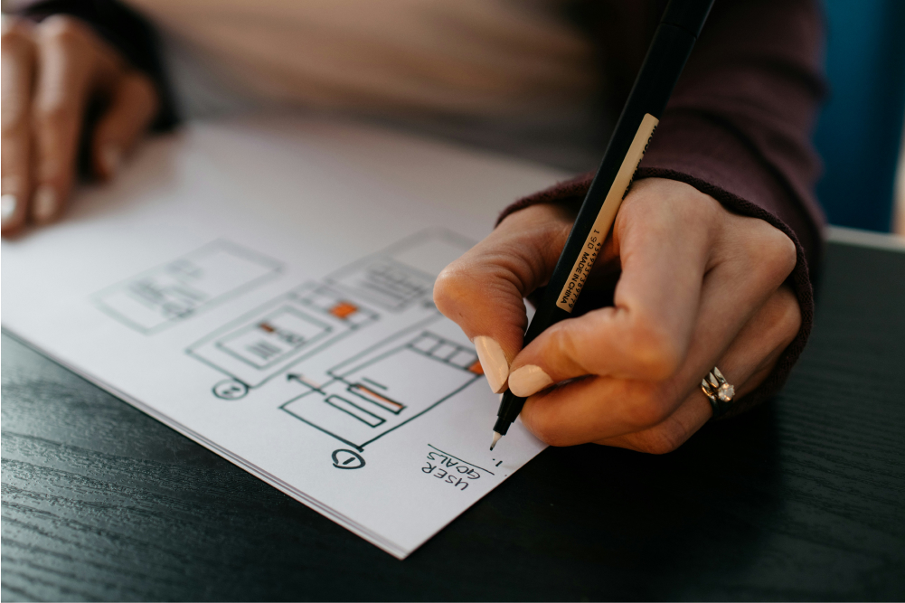
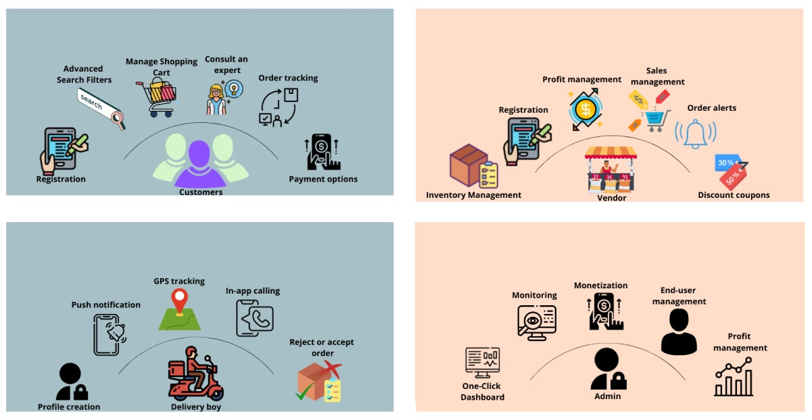
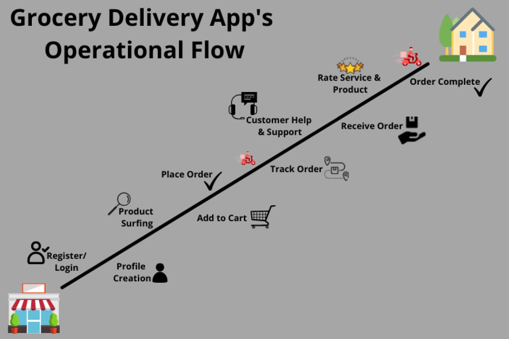
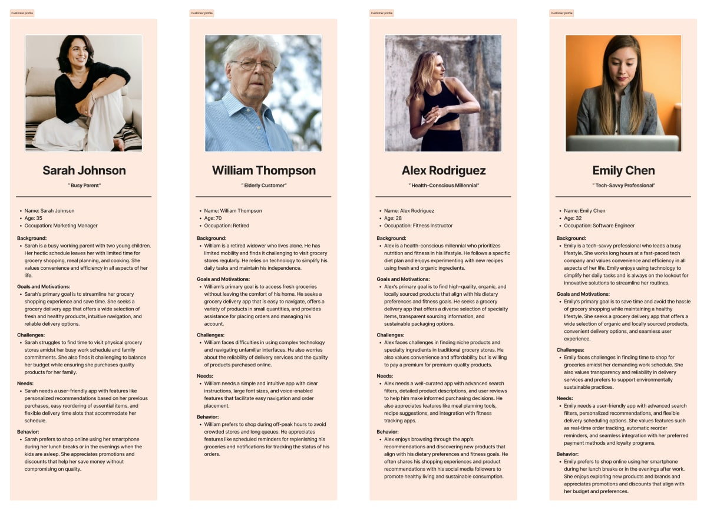
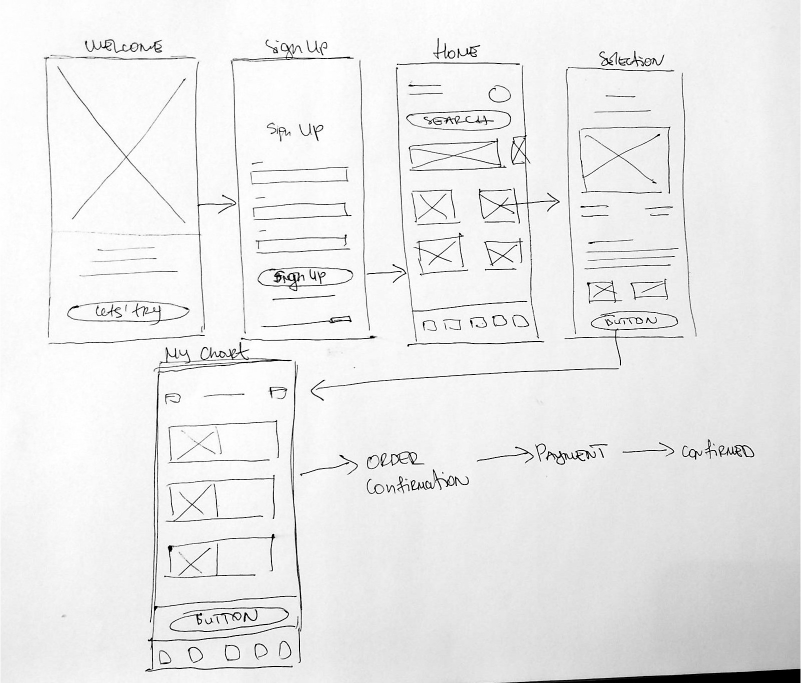
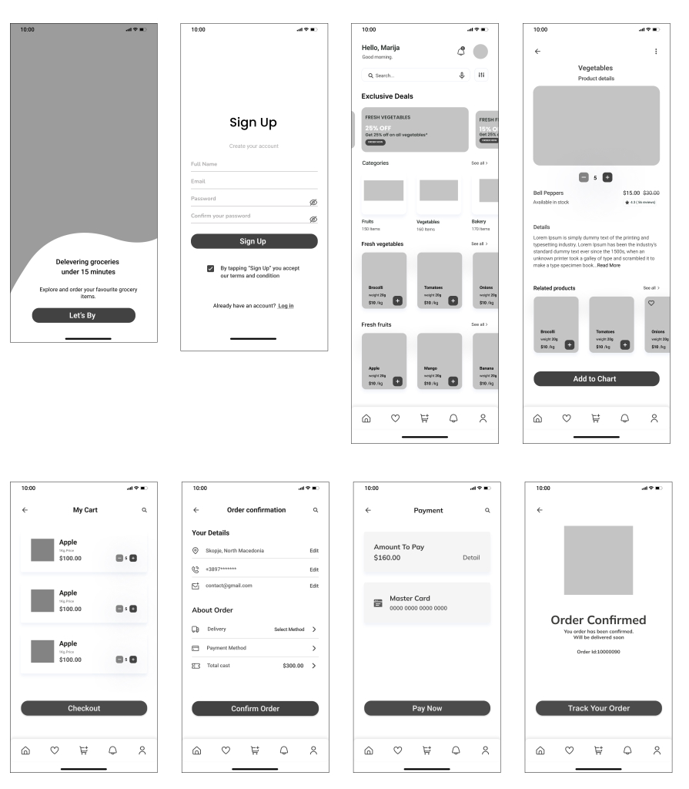
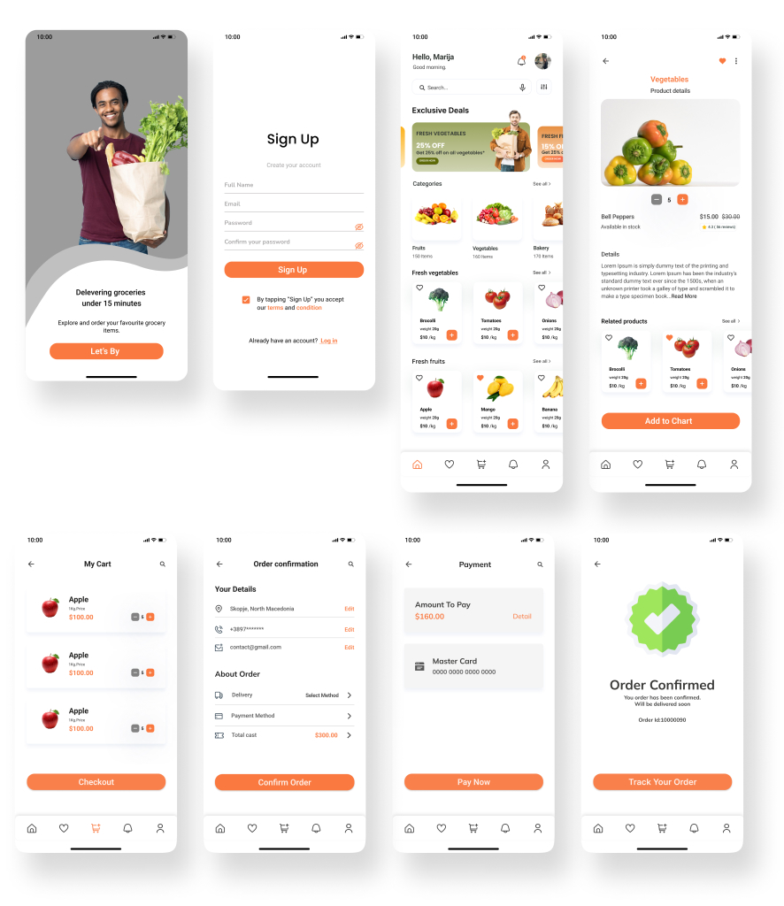

Case study
Designing a Mobile App for a Simpler Grocery Shopping Experience
Role
UX research and design
Type
Personal project
Platform
Mobile app
01
I wanted to explore how grocery shopping could be made easier through a mobile app. Since it is something people do regularly, I focused on creating an experience that saves time and makes the whole process simple and convenient.
The idea was to bring everything together in one place, so users can browse products, find what they need and order groceries without going through a complicated process. I also wanted the app to work for people with different needs, from busy parents who want to save time to older users who prefer a simple and clear interface.

02
This was a personal UX design project where I worked on the app from the research stage to the final designs.
I started by exploring the grocery delivery market and looking at how other apps approach online shopping. Based on what I learned, I created user personas, explored different ideas, planned the main user flows and designed wireframes and high fidelity screens.
My main focus was to make the shopping experience clear and easy to follow, with simple navigation and all the important information easy to find.
03
I started by looking into the grocery delivery market and exploring existing apps. I wanted to understand how people shop for groceries online, what features they find useful and what makes the experience easier or more difficult.
I also looked at common features across grocery apps, such as account registration, location selection, product categories, search, shopping carts and online payments.
One interesting finding from my research was that many customers prefer using their smartphones when shopping for groceries. This made it important to think about the experience from a mobile first perspective.
Making it easy for users to create an account and get started.
Helping users set their delivery location and understand where orders can be delivered.
Organizing products into clear categories and making search easy to use.
Keeping it easy to view products, add items to the cart and place an order.
Giving users the option to save favorite products and make shopping more convenient.


04
I wanted the app to feel simple and familiar, especially for people who may not use shopping apps very often.
I focused on clear navigation, readable content and a straightforward shopping process. I also considered accessibility and how different users might interact with the app, including people who may need larger text or clearer visual contrast.
Another part of the experience was personalization. Features such as saved products and recommendations can help users find the things they regularly buy without starting from scratch every time.
05
To better understand the different people who might use the app, I created user personas based on their needs, habits and expectations.
I considered different types of users, including people with busy schedules who want to shop quickly, users who pay more attention to product choices and older people who need an interface that is easy to understand.
These personas helped me keep different user needs in mind while making design decisions.

06
Once I had a better understanding of the users and the main features, I started sketching different ideas for the app.
I explored possible layouts, navigation options and ways to organize the products and shopping experience. Sketching helped me try out different ideas before moving into digital wireframes.

07
After the initial sketches, I started creating wireframes and mapping out the main user flows.
I focused on the steps users would take while using the app, from browsing product categories and viewing individual products to adding items to their cart.
I used these flows to think through the navigation and make sure each step was easy to follow. I then developed the wireframes into high fidelity prototypes, refining the layouts and visual details along the way.

08
The final design brings all the main parts of the grocery shopping experience together in one mobile app.
I focused on keeping the interface clean and easy to navigate, with clear product categories, simple product pages and an organized shopping cart. Each screen was designed to give users the information they need without making the process feel complicated.
My goal was to create an app that makes everyday grocery shopping a little easier, whether someone is ordering a few things or doing their weekly shopping.
